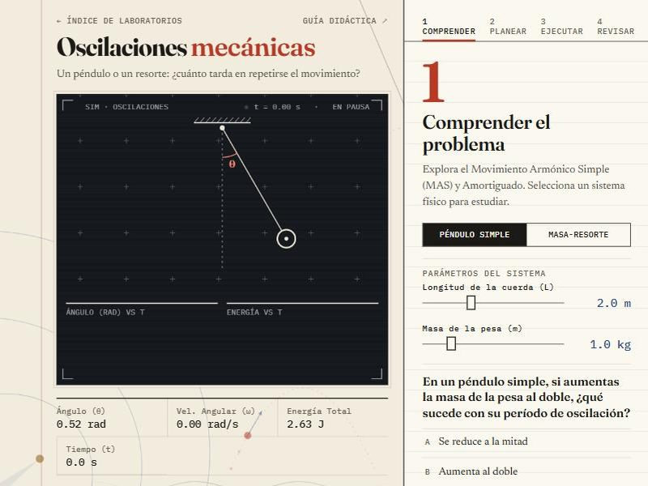
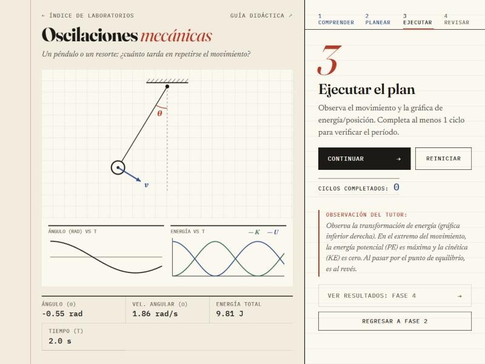
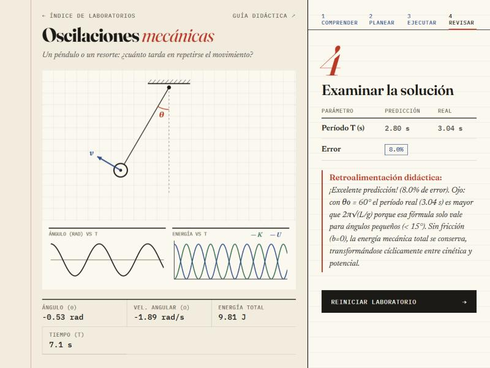

Oscilaciones mecánicas
Guía didáctica del estudiante · método de Pólya · Física — UNIR
Un péndulo o un resorte: ¿cuánto tarda en repetirse el movimiento? Con esta guía vas a predecir el período, medirlo en la simulación y descubrir cuándo la fórmula de libro deja de ser exacta.
Movimiento armónico simple
El movimiento armónico simple (MAS) aparece cuando la fuerza restauradora es proporcional al desplazamiento desde el equilibrio.
Conservación de la energía
Sin fricción, la energía total E = K + U es constante: en los extremos la velocidad es cero y la energía potencial es máxima; al pasar por el equilibrio la velocidad es máxima y lo es la energía cinética.
Dos límites de las fórmulas de libro
- Amplitud: T = 2π√(L/g) solo vale para ángulos pequeños (menos de unos 15°). A 60° el período real es un 7 % mayor y a 80°, cerca de un 14 %.
- Amortiguamiento: con fricción viscosa b, el período se alarga a Td = T/√(1 − ζ²), donde ζ es la razón de amortiguamiento. En el resorte, ζ = b / (2·√(k·m)). Si ζ ≥ 1 el sistema ya no oscila: vuelve al equilibrio sin cruzarlo.
Comprender el problema
Elige el sistema —péndulo o masa-resorte— e identifica sus variables.

En tu cuaderno · variables
| Variable | Péndulo | Masa-resorte |
|---|---|---|
| Fuerza restauradora | Gravedad (g) | Constante del resorte (k) |
| Inercia | Longitud (L) | Masa (m) |
| Fricción | Coef. viscoso (b) | Coef. viscoso (b) |
Concebir un plan
Calcula el período teórico esperado de cada sistema con los valores que elijas.
En tu cuaderno · período esperado
| Sistema | Valores de entrada | Cálculo de T |
|---|---|---|
| Péndulo | L = m | T = 2π√(L/g) = s |
| Masa-resorte | k = N/m, m = kg | T = 2π√(m/k) = s |
Si lanzas el péndulo desde 60°, ¿esperas que el período real sea igual, mayor o menor que el de la fórmula? Anota tu predicción antes de medir.
Ejecutar el plan
Ejecuta la simulación y observa las gráficas inferiores: posición frente al tiempo y energía (cinética en verde, potencial en azul) frente al tiempo.

Aumenta el coeficiente de fricción b a 0.5. ¿Qué le ocurre a la amplitud de la gráfica de posición con el tiempo? ¿Qué pasa con la energía total? Si pones un b muy alto en el resorte, ¿se completa algún ciclo?
Examinar la solución
Tras completar un ciclo, el simulador compara tu predicción con el período medido y te explica las desviaciones: la amplitud, el amortiguamiento o el sobreamortiguamiento.

Conclusiones esperadas
- El período de un péndulo simple no depende de su masa, solo de su longitud y de la gravedad.
- El período de un resorte depende de m y de k: un resorte más rígido oscila más rápido.
- Sin amortiguamiento, la energía mecánica se conserva y alterna entre cinética y potencial.
- Con amortiguamiento, la amplitud decae y la energía se disipa; si ζ ≥ 1 no hay oscilación.
- La fórmula T = 2π√(L/g) solo es exacta para amplitudes pequeñas.
¿Por qué un reloj de péndulo se atrasa cuando la oscilación es muy amplia? ¿Qué harías para que mantenga la hora con amplitudes distintas?